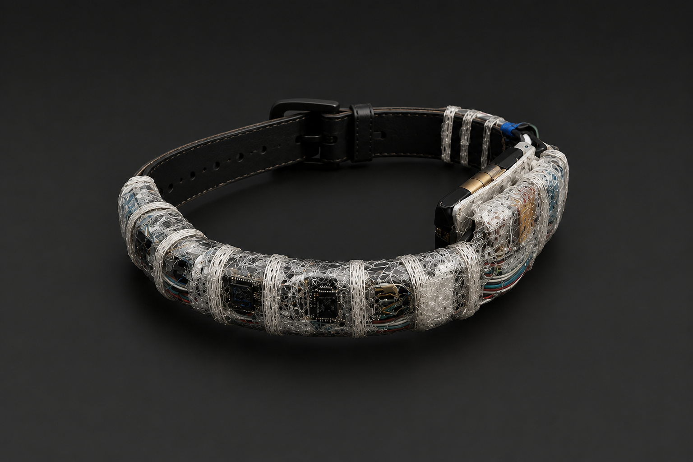

I had no idea
what I was doing.
I did it anyway.
This is not a portfolio. It is what actually happened. The good parts, the broken parts and everything still in progress.
Full stack developer and founder of Snoufai. Based in Lucknow, India. Always building something.
First year of college. Three friends. Zero coding knowledge. One completely pointless idea.
We wanted to store our friendship digitally. No market research, no problem to solve, no real user in mind. Just three people who thought it would be fun to build something together.
So we built Backbencher. A platform for preserving college memories and organising campus events. No AI tools. No guidance. We figured it out as we went.
Looking back it was a simple project. Maybe even a silly idea. But it was ours. And finishing it felt like something I had never felt before.
That feeling of making something exist that did not exist before. That is what pulled me deeper. Not the project. The feeling.
That was the moment everything started.
Second year. If I was going to build something, it had to be mine.
Pet care kept coming up. Most of the world was ignoring it, especially in India. I started thinking about what pet owners actually needed.
First idea: a social media platform for pets. Instagram was already full of that.
Second idea: online vet support. But animals cannot speak. A doctor needs to physically examine a patient. You cannot do that through a screen.
Then something clicked. What if we could give doctors the data they need before the appointment even happens? Vitals, activity, temperature, behaviour over time. The vet stays for treatment only. The basic picture is already there, from the data.
A smart collar. Something that monitors the pet continuously and sends real health data online. So when you visit a vet, they are not diagnosing blind. And if something looks wrong between visits, you know before it becomes serious.
That was Snoufai. Not just a collar. A platform where pet health data lives, gets analysed by AI, and turns into real guidance for owners and vets both.
We registered the company. Filed for DPIIT recognition. Got it. Then we started building.
Building a startup sounds exciting from the outside. From the inside it looks very different.
We started as three founders. Strong friendship, shared vision, big plans. Then one of them left. Financial constraints, miscommunication — things that sound small from the outside but feel enormous when you are living them.
I was broken for a while. Someone I trusted, someone I thought we would build this together with, was gone.
Then there is the money. Building a hardware startup as a student means depending on your parents for every component order, every server bill. You feel grateful and ashamed at the same time.
I think about quitting sometimes. Most founders do. The difference is just the decision to go one more day. So that is what I do.

SNOUFAI PROTOTYPE — BUILT BY HAND
During prototype testing we found that sensors could not capture accurate readings through pet fur. Every existing wearable has this problem. Nobody had solved it. So we went deeper into researching custom electrode design to fix it at the root. That research is now the core of what makes Snoufai different.
I am a full stack developer. But that title does not cover what actually happens day to day.
I write firmware for microcontrollers. I solder sensors onto boards. I build mobile apps in Flutter. I train machine learning models. I handle GST returns, incubator applications, and team management. Sometimes all in the same week.
Beyond Snoufai, I am building two other things. An AI price comparison tool that tells you the best time to buy, not just the current price. And CareerSense, a job platform that asks what you actually want before recommending roles.
The thing I keep coming back to is this.
We live in a time where almost anything can be learned. The internet exists. Resources exist. If you want to understand how a sensor works, someone has written about it. If you want to build a product, someone has documented how.
The only real requirement is curiosity. Not a degree. Not money. Not connections. Just the willingness to keep asking questions and not stop when it gets hard.
A person can do anything in this world today. The only thing between you and it is whether you are curious enough to find out how.
I am still in the middle of my story. The prototype is not finished. The company is not profitable. Most things are still in progress.
But I am further than I was. And I am not stopping.
If any of this
resonated,
let us talk.
Open to remote part-time development work, selective freelance projects, and conversations with people building something real.